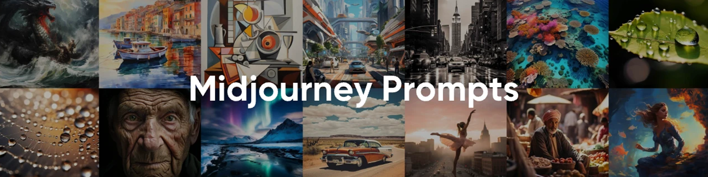

50 个最佳 Midjourney 提示：AI 艺术创作的技巧和想法
MidJourney 是一款突破性的人工智能工具，它使用户能够将文字描述转化为生动的人工智能艺术作品。其直观的界面既适合新手，也适合经验丰富的艺术家，使数字艺术创作比以往任何时候都更容易。
释放 MidJourney 全部潜力的关键在于精心设计精准且富有想象力的提示。精心构建的提示可以作为 AI 的蓝图，引导其生成符合你创意愿景的图像。相反，模糊或结构不良的提示可能会导致意想不到或不理想的结果。掌握提示写作的艺术对于获得真正反映你意图的高质量输出至关重要。
本指南旨在帮助初学者和高级用户提升他们的提示创作技能。我们将探索 MidJourney 精选的 50 个最佳提示 ，并提供详细的示例和实用技巧，以激发你的创造力并提升你的 AI 生成艺术作品。
无论你是刚刚开始 AI 艺术之旅，还是希望完善现有技能，本指南都将帮助你探索 MidJourney 的最佳提示，并将你的数字创作提升到新的高度。
什么是Midjourney 提示？
MidJourney 提示是你提供的文本指令，用于指导 AI 生成艺术作品。这些提示充当 AI 的蓝图，描述你希望它创作的内容，从具体的主题和风格，到诸如光线或配色方案等复杂细节。本质上，它们是你的想象力与 MidJourney 生成的惊艳视觉输出之间的桥梁。
精心设计的提示词会显著影响生成作品的质量。例如，与其写"一片森林"，不如写"一片沐浴在金色阳光下的神秘森林，树木参天，雾气弥漫"。这种精准的表达不仅能帮助 AI 捕捉到作品的整体构思，还能捕捉到你构想中的氛围、风格和细节。了解如何为 MidJourney 创建提示词，对于实现预期效果至关重要。
编写有效的 MidJourney 提示的力量在于它们能够定义输出的风格和主题。无论你追求的是照片般逼真的城市景观，还是超现实的奇幻世界，加入描述性元素都能确保最终作品符合你的创作目标。结构合理的提示还能让你尝试不同的艺术风格，或突破 AI 创作的极限。
通过掌握提示写作的艺术，你可以释放 MidJourney 的全部潜力并将你的想法转化为令人惊叹的视觉效果。
为什么提示对于 Midjourney 很重要？
提示在决定 MidJourney 生成图像的质量、定制化程度和整体成功率方面起着至关重要的作用。精心编写的提示能够提供清晰具体的指示，使 AI 能够生成与你的创意愿景紧密契合的视觉效果。相反，模糊或结构不良的提示可能会导致令人失望或千篇一律的输出，无法捕捉预期的风格、主题或细节。
用户面临的最常见挑战之一是在设计提示时找到适当的平衡。像"一只狗"这样的 模糊描述 会让AI难以理解，最终导致图片简陋或缺乏灵感。另一方面， 过于复杂的短语和 不必要的细节会让AI感到困惑，并导致结果不一致。在清晰度和具体性之间取得平衡至关重要。
以下是好提示与坏提示的示例，可以说明这一点：
- 错误提示： "一只狗"
- 好的提示： "一只金毛猎犬小狗在阳光明媚的草地上玩耍，周围环绕着五颜六色的鲜花。"
第一个提示"一只狗"过于笼统，留给AI太多解读空间，结果往往平平无奇。相比之下，第二个提示提供了关于主题、场景和情绪的具体细节，引导AI生成更生动、更个性化的图像。
掌握设计有效提示的艺术，可以充分释放 MidJourney 的潜力，根据你的具体需求定制输出。无论你想要的是写实的肖像、梦幻的风景，还是抽象的构图，精心构建的提示都是创作令人惊叹的 AI 生成艺术作品的基础。
如何为 MidJourney 撰写好的提示
为 MidJourney 编写优秀的提示是释放其全部创作潜力的关键。通过了解优秀提示的基本要素并运用策略技巧，你可以精心设计输入，引导 AI 创作出令人惊艳的定制化艺术作品。让我们探索一些关键技巧，帮助你掌握这项技能。
了解良好提示的关键组成部分
强有力的提示的基础在于其清晰度和具体性。你包含的每个元素都会塑造最终的图像，因此请考虑以下组成部分：
- 具体主题 ：清晰地描述你希望AI生成的内容。例如，不要说"一座城市"，而应该选择"一座摩天大楼林立的未来城市景观"。
- 描述性形容词 ：使用形容词来设定基调、氛围或风格。"充满活力"、"简约"或"空灵"等词语会对图像效果产生显著的影响。
- 风格与影响 ：参考特定的风格或艺术家来引导 AI。"灵感来自梵高"或"赛博朋克风格"等短语有助于使艺术作品与你的愿景保持一致。
通过关注这些元素，你将创建不仅详细而且与你的艺术目标相一致的提示。
融合风格和灯光
风格和灯光是提示的关键因素，它们会极大地影响最终效果。通过指定这些细节，你可以为图像增添深度和视觉吸引力：
- 灯光描述： "柔和的灯光"、"戏剧性的阴影"或"黄金时段的灯光"等短语可以增强艺术品的氛围。
- 风格理念： 无论你想要"照片般逼真"的肖像、"动漫"角色还是"赛博朋克"风景，在提示中包含风格都可以确保 AI 了解你的喜好。
例如，"一幅逼真的战士肖像，以动漫艺术为灵感，在戏剧性的阴影下"这样的提示，能够有效地将光线、风格和主题融合在一起。如果你正在探索小众产品，例如 MidJourney 的动漫艺术提示，请务必在描述中强调独特的风格元素。
避免提示过载
虽然细节很重要，但避免在单个提示中塞入过多信息。过多的提示会让 AI 感到困惑，导致结果缺乏一致性。优先考虑最重要的细节，力求简洁明了。
- 超载提示示例 ："未来主义的城市景观，闪烁的霓虹灯、飞行汽车、熙熙攘攘的市场、高耸的摩天大楼、戏剧性的灯光、赛博朋克风格、阴雨天气和街道上的倒影。"
- 简单提示示例 ："夜晚的赛博朋克城市景观，有闪烁的霓虹灯、飞行的汽车和湿漉漉的街道上的倒影。"
简易版保留了关键元素，同时简化了结构，使 AI 更容易解读并生成连贯的图像。通过保持提示清晰明确，你将获得更可靠、更醒目的视觉效果。
掌握这些技巧将使你能够编写充分利用 MidJourney 功能的提示，无论你想要的是现实的、抽象的还是高度风格化的艺术作品。
50个创意提示
打造独特而富有想象力的提示是释放 MidJourney 全部潜力的关键。无论你是初出茅庐，还是渴望突破 AI 生成艺术的界限，我们都精心挑选了 50 多个创意点子，为你打造下一个杰作。让我们深入了解针对初学者、高级用户和特定风格的定制提示。
对于初学者
如果你是 MidJourney 的新手，从简单而富有创意的提示开始是熟悉该工具的好方法。这些提示旨在易于使用，同时仍能产生引人入胜的结果：
"满月下的魔法森林。"

- "一艘漂浮在云层之上的蒸汽朋克飞艇。"
- "日出时宁静的山间湖泊，倒映着绚丽的光芒。"
- "一间舒适的小屋，周围白雪皑皑，烟囱里袅袅升起炊烟。"
这些简单的提示可以帮助你探索 MidJourney 的基本功能，同时生成令人惊叹的视觉效果。
对于高级用户
对于经验丰富的人，融合多种细节、风格或影响可以产生复杂而动态的效果。以下是一些可以激发你灵感的高级技巧：
"夜晚的未来城市景观，霓虹灯反射在湿漉漉的街道上，风格类似《银翼杀手》。

- "一片超现实的沙漠景观，有漂浮的岛屿和发光的水晶。"
- "一座隐藏在茂密丛林中的古老寺庙，被柔和的灯光照亮。"
- "赛博朋克背景下的繁华市场，充满了充满活力的全息广告。"
这些提示可以让你突破创意界限，将复杂的元素结合起来，创造出高度定制的艺术品。
按风格分类的利基提示
通过这些针对幻想、现实主义和抽象艺术量身定制的利基提示来探索特定的艺术流派和风格。
幻想艺术提示：
"一条神秘的龙飞过雪山。"

- "一座漂浮在空中的魔法城堡，周围环绕着发光的球体。"
- "一位战士站在悬崖上，俯瞰着被深红夕阳照亮的战场。"
逼真的图像提示：
"这是 20 世纪 20 年代巴黎街头咖啡馆的一张偷拍照片。"

- "一只金毛猎犬在阳光明媚的草地上玩耍，周围环绕着野花。"
- "一座古老的木桥横跨一条平静的河流，秋叶散落在地上。"
摘要提示：
"受立体主义启发，几何形状呈现出五彩缤纷的色彩。"

- "一只金毛猎犬在阳光明媚的草地上玩耍，周围环绕着野花。"
- "一座古老的木桥横跨一条平静的河流，秋叶散落在地上。"
这些小众提示迎合了各种艺术偏好，帮助你探索 MidJourney 的全部创作可能性。
关于 Midjourney 提示的常见问题解答
使用 MidJourney 探索 AI 生成的艺术世界可能会引发一些问题，尤其是在设计有效的提示方面。以下是一些常见问题的解答。
1、如何开始使用 MidJourney 中的提示？
首先，你可以通过两个主要选项访问 MidJourney：
- 官方 Discord 服务器： 加入 MidJourney 的官方 Discord 服务器，你可以使用 /imagine 命令创作 AI 生成的艺术作品。例如，输入 /imagine a serene beach at sunrise，AI 就会根据你的描述生成一幅图像。这是与 MidJourney 互动并访问其所有功能的主要方式。
- 环球巴士 MidJourney 服务 ： 或者，你可以通过 环球巴士 使用 MidJourney 服务，该服务提供简化的图像生成界面，无需使用 Discord。对于喜欢以更简单的方式探索 MidJourney 功能的用户来说，这是一个便捷的选择。
这两种方法都提供了制作令人惊叹的 AI 艺术的强大工具，你可以选择最适合你的偏好和工作流程的方法。
2、什么是好的 MidJourney 提示？
精心设计的提示语清晰、具体且描述性强。它应该包含关于主题、风格和所需元素的详细信息。例如，与其说是"一只狗"，不如说是"一只金毛猎犬幼犬在阳光明媚的草地上玩耍，周围环绕着五颜六色的花朵"。这种具体性能够引导 AI 生成更准确、更高质量的图像。
3、我可以在一个提示中使用多种样式或主题吗？
是的，在一个提示中融合多种风格或主题可以产生独特而富有创意的效果。例如，你可以提示："未来主义的城市景观，融合中世纪建筑，具有赛博朋克和蒸汽朋克风格。" 但是，请注意不要使提示过于复杂，因为过于复杂的描述可能会使AI感到困惑，导致图像缺乏凝聚力。
4、在哪里可以找到 MidJourney 的精选提示？
一些在线资源提供了精选的创作灵感清单。以下平台可能会对你有所帮助：
- PromptBase： 一个拥有海量 MidJourney 提示语库的平台，这些提示语均由专业的 AI 艺术家精心创作。你可以探索他们的收藏，提升你的提示技巧。
- MidJourney SREF 代码库： 提供全面的独特 MidJourney 提示和样式参考代码集合，每日更新以保持你的创造力源源不断。
- PromptLibrary.org： 提供超过 25，000 个精心挑选的免费 MidJourney 提示来激发你的灵感，使其成为初学者和高级用户的宝贵资源。
探索这些资源可以在你制定自己的提示时提供灵感和指导。
通过 MidJourney 展示你的创造力
清晰、细致且富有创意的提示对于充分释放 MidJourney 在 AI 生成艺术方面的潜力至关重要。通过提供具体且富有想象力的指令，你可以引导 AI 创作出真正体现你艺术愿景的图像。
请记住，提示越精确、越生动，输出就越准确、质量就越高。
大胆尝试不同的风格、主题和描述。练习是掌握即兴创作的关键，每一次尝试都会让你更接近完美的作品。
立即使用 MidJourney 的这些提示，创作令人惊艳的 AI 艺术作品。分享你最喜欢的提示，或探索我们的独家合集，获取更多灵感！